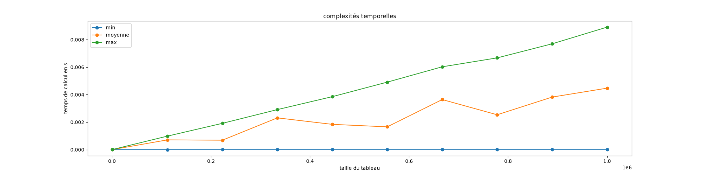

Complexité en moyenne
Lorsque le nombre d'opérations d'un algorithme varie fortement selon ses entrées ou que l'on veut mesurer physiquement le temps mis par un code pour être exécuté on a coutume d'utiliser la mesure de complexité en moyenne qui permet de savoir le nombre d'opérations espéré pour un tableau quelconque de taille donné.:
La complexité en moyenne d'un algorithme est le nombre moyen d'opérations nécessaires pour se terminer par rapport à toutes les entrées de mêmes paramètres.
Si le paramètre de calcul de la complexité est la taille des entrées de l'algorithme, ce que est (très) souvent le cas, la complexité en moyenne sera le nombre moyen d'opérations utilisées pour toutes les données de même taille.
Calcul de la complexité en moyenne
Soit $A$ un algorithme dont on veut calculer sa complexité par rapport au paramètre $n$ (par exemple la taille des données). Si $\mathcal{E}_n$ est l'ensemble contenant toutes ses entrées de paramètre $n$ et s'il faut $N(e)$ opérations pour exécuter l'algorithme $A$ avec l'entrée $e$, on a :
- la complexité $C_\max(n)$ de l'algorithme vaut $C_\max(n) = \max \{N(e) \mid e \in \mathcal{E}_n\}$
- la complexité minimum $C_\min(n)$ de l'algorithme vaut $C_\min(n) = \min \{N(e) \mid e \in \mathcal{E}_n\}$
L'espérance de la complexité, c'est à dire la complexité attendue ou normale si l'algorithme est exécutée pour une entrée au hasard, est appelée complexité en moyenne.
Elle dépend des entrées de celui-ci et plus précisément du nombre de fois où une entrée donnée peut être choisie. Pour pouvoir la calculer de façon formelle, il faut connaître le modèle probabiliste associé aux données :
La complexité en moyenne de l'algorithme $A$ pour une entrée de paramètre $n$ est :
Avec :
- $\mathcal{E}_n$ l'ensemble des données de paramètre $n$,
- $p_n(e)$ la probabilité de choisir $e \in \mathcal{E}_n$ comme entrée de l'algorithme
- $N(e)$ le nombre d'opérations utilisé par l'algorithme pour se terminer avec l'entrée $e$.
Si l'on a pas de modèle a priori, on considérera que chaque donnée est équiprobable : chaque entrée $e$ de $\mathcal{E}_n$ a la même probabilité d'être choisie :
Exemple de la recherche d'un élément dans un tableau
Reprenons l'exemple de la recherche d'un élément d'un un tableau :
algorithme recherche(T: []int, x: int) → bool:
pour chaque e de T:
si e == x:
rendre Vrai
rendre FauxOn avait déterminé ses complexités par rapport à la longueur $n$ du tableau :
- la complexité (maximale) de l'algorithme
rechercheest $\mathcal{O}(n)$ (on parcourt tout le tableau sans trouverx) - la complexité minimale de l'algorithme
rechercheest $\mathcal{O}(1)$ (xest le premier élément du tableau)
Si l'on note $\mathcal{E}_n$ l'ensemble de tous les tableau de longueur $n$, il y en a une infinité. Notre calcul de la complexité en moyenne est donc ardu car il est impossible de trouver la probabilité de choisir 1 élément parmi une infinité. Pour résoudre ce problème il faut partitionner $\mathcal{E}_n$ en un nombre fini de classes judicieusement choisies :
Pour calculer facilement une complexité en moyenne il faut pourvoir partitionner l'ensemble des entrées un nombre fini de classes dont :
- la complexité est la même pour chaque entrée de la même classe,
- il est facile de calculer la probabilité qu'une entrée fasse partie d'une classe donnée
Pour notre problème de recherche, cette partition va correspondre à l'endroit où se trouve la valeur à chercher x dans le tableau T :
- si
xest à l'indice $0$ du tableau, il faudra $\mathcal{O}(1)$ opération pour exécuter l'algorithme - si
xest à l'indice $1$ du tableau, il faudra deux fois plus d'opérations que s'il était à l'indice $0$, donc $2 \cdot \mathcal{O}(1)$ opérations pour exécuter l'algorithme - si
xest à l'indice $2$ du tableau, il faudra trois fois plus d'opérations que s'il était à l'indice $0$, donc $3 \cdot \mathcal{O}(1)$ opérations pour exécuter l'algorithme - ...
- si
xest à l'indice $i$ du tableau, il faudra $i+1$ fois plus d'opérations que s'il était à l'indice $0$, donc $(i+1) \cdot \mathcal{O}(1)$ opérations pour exécuter l'algorithme - ...
- si
xest à l'indice $n-1$ du tableau, il faudra $n$ fois plus d'opérations que s'il était à l'indice $0$, donc $n \cdot \mathcal{O}(1)$ opérations pour exécuter l'algorithme - si
xn'est pas dans le tableau, il faudra $n+1$ fois plus d'opérations que s'il était à l'indice $0$, donc $(n+1) \cdot \mathcal{O}(1)$ opérations pour exécuter l'algorithme
L'ensemble $\mathcal{E}_n$ de tous les tableaux de longueur $n$ peut alors se segmenter en $n+1$ classes :
- les ensembles $\mathcal{E}^i_n$, pour $0 \leq i < n$, qui regroupent les tableaux contenant
xen position $i$ - l'ensemble $\mathcal{E}^n_n$, qui regroupe tous les tableaux ne contenant pas
x
La complexité en moyenne s'écrit alors :
On note $p_{i}$ la probabilité qu'à une entrée d'être dans $\mathcal{E}^i_n$ :
Ce qui donne :
Pour pouvoir calculer $C$ effectivement, il faut connaître les $p_i$. Comme on a pas de modèle a priori, on va considérer que chaque tableau de taille $n$ à la même probabilité d'être choisie et donc que la position de x dans tableau est équiprobable : $p_i = \frac{1}{n + 1}$ pour tout $0 \leq i \leq n$. On a alors :
Et comme $\sum_{i=0}^{i = n}(i + 1) = \frac{(n + 2)(n + 1)}{2}$ on en déduit que :
Proposition
La complexité en moyenne de l'algorithme recherche est la même que la complexité maximale.
On peut comprendre ce résultat ainsi : si notre modèle est équiprobable, s va se trouver en moyenne au milieu de notre tableau, et donc qu'il faut parcourir de l'ordre de $\frac{n}{2}$ éléments de T, la complexité en moyenne est de $\mathcal{O}(n/2) = \mathcal{O}(n)$ qui est la même que la complexité maximale.
On utilisera souvent ce genre de raisonnement si les données sont équiprobable : en moyenne il faut parcourir la moitié des possibilités avant de trouver la solution.
Intérêt
Pour tout algorithme, on a les inégalités suivantes :
La complexité en moyenne nous donne le nombre d'opérations attendu si on exécute l'algorithme (et qu'on a ni beaucoup de chance (et qu'on tombe sur la complexité minimale) ni pas de chance du (tout pour tomber sur la complexité maximale)). La complexité en moyenne nous indique, pour un modèle de données, si les cas extrêmes (complexité minimale et maximale) arrivent fréquemment ou pas :
- si la complexité maximale est égale à la complexité en moyenne alors la complexité maximale arrivera souvent
- si la complexité minimale est égale à la complexité en moyenne alors la complexité minimale arrivera souvent
- si les trois complexités sont différentes, les cas minimum et maximum arriveront rarement.
En pratique
La complexité en moyenne est également un moyen rapide et simple d'estimer la complexité d'un code. Pour estimer la complexité en moyenne d'un algorithme codé, on mesure le temps pris par l'algorithme pour s'exécuter avec des données aléatoires et d'en faire la moyenne (c'est un estimateur sans biais de la moyenne théorique).

On voit bien que la complexité moyenne est entre la complexité minimale et maximale et est en environ 2 fois plus petite.
Le code qui a permit de générer le graphique est ci-dessous. Il est en python et utilise les modules https://matplotlib.org/ et https://numpy.org/. Nous allons faire un projet pour détailler tout ça juste après.
code python
code python
from time import perf_counter
import random
import numpy as np
def recherche(T, x):
for e in T:
if e == x:
return True
return False
def calcule_max(n, rep=5):
T = list(range(n))
s = 0
for _ in range(rep):
début = perf_counter()
recherche(T, n)
fin = perf_counter()
s += fin - début
return s / rep
def calcule_min(n, rep=5):
T = list(range(n))
s = 0
for _ in range(rep):
début = perf_counter()
recherche(T, T[0])
fin = perf_counter()
s += fin - début
return s / rep
def calcule_moyenne(n, rep=5):
T = list(range(n))
s = 0
for _ in range(rep):
début = perf_counter()
recherche(T, random.randrange(n+1))
fin = perf_counter()
s += fin - début
return s / rep
x = np.linspace(1000, 1000000, 10)
t_min = []
t_max = []
t_moy = []
print("calculs pour", end=" ")
for n in x:
print(n, end=" ")
t_min.append(calcule_min(int(n)))
t_max.append(calcule_max(int(n)))
t_moy.append(calcule_moyenne(int(n)))
print()
import matplotlib.pyplot as plt
fig, ax = plt.subplots(figsize=(20, 5))
ax.set_title("complexités temporelles")
ax.set_xlabel("taille du tableau")
ax.set_ylabel("temps de calcul en s")
p1, = ax.plot(x, t_min, 'o-', label="min")
p2, = ax.plot(x, t_moy, 'o-', label="moyenne")
p3, = ax.plot(x, t_max, 'o-', label="max")
ax.legend(handles=(p1, p2, p3))
plt.show()